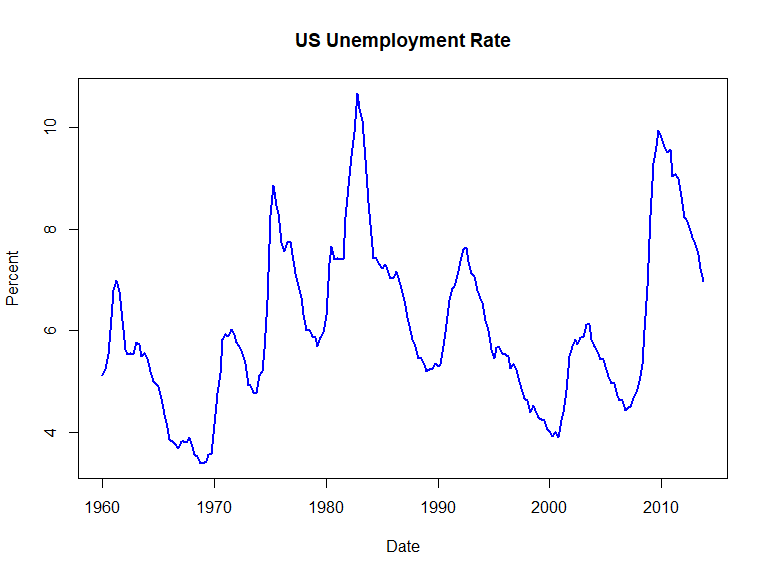

Based on Stock and Watson, ch. 15
A deterministic trend is a nonrandom function of time \(t\); a linear trend is a deterministic trend:
\[Y_t = \alpha + \delta t + \beta_1 Y_{t-1} + u_t\]
Deterministic trends typically adds no complications to inference and forecasting
Stochastic trends are random and varies over time: may be growing for a while, and then start falling
Stochastic trends complicate inference and forecasting, but often more appropriate for economic time series
The random walk model is a simple and versatile way of introducing a stochastic trend to a time series model
\(Y\) follows a random walk if changes in \(Y\) are i.i.d.:
\[\Delta Y_t = u_t \Leftrightarrow Y_t = Y_{t-1} + u_t,\]
where \(u_t\) is i.i.d. and \(E(u_t|Y_{t-1},Y_{t-2},...) = 0\)
\(Y_t\) is produced by a “random step” \(u_t\) from last period’s position \(Y_{t-1}\); hence, the “random walk” label!
A random walk is nonstationary because the variance increases over time (see pre-recorded lecture)
\[Y_t = Y_{t-1} + u_t; \quad u_t \sim \mathcal{N}(0,1); \quad Y_0 = 0\]

An persistent upward (or downward) tendency is hard to capture in the pure random walk
Add a drift \(\beta_0\) to the pure random walk model:
\[\Delta Y_t = \beta_0 + u_t \Leftrightarrow Y_t = \beta_0 + Y_{t-1} + u_t,\]
where \(u_t\) is i.i.d. and \(E(u_t|Y_{t-1},Y_{t-2},...) = 0\)
\(Y_t\) is produced by a “random step” \(\beta_0 + u_t\) from last period’s position \(Y_{t-1}\)
\(\beta_0 >0\): upwards drift; \(\beta_0 <0\): downwards drift
\[Y_t = \beta_0 + Y_{t-1} + u_t; \quad u_t \sim \mathcal{N}(0,1); \quad Y_0 = 0\]
The \(AR(1)\)-model is \(Y_t = \beta_0 + \beta_1 Y_{t-1} + u_t\); hence, a random walk is an \(AR(1)\)-model with \(\beta=1\)
An \(AR(1)\)-model with \(\beta=1\) is said to have a unit root
(because the socalled characteristic polynomial of the \(AR(1)\)-model, \(1-\beta_1 z\), in that case has root \(z = 1\))
Unit root process, random walk process, and stochastic trend all refer to \(Y_t = \beta_0 + Y_{t-1} + u_t\) with \(u_t\) i.i.d.
Consider the \(AR(1)\) model
\[Y_t = \beta_0 + \beta_1 Y_{t-1} + u_t\]
w/ \(u_t\) i.i.d. and \(E[u_t|Y_{t-1},Y_{t-2},...]=0\)
If it is in fact the case that \(\beta_1 = 1\), then
\(\hat{\beta}\) severely biased towards 0 for small \(T\)
Distribution of \(\hat{\beta}\) not normal, even for large \(T\)
Problematic for constructing forecasts, forecast intervals, and for testing hypotheses involving \(\beta_1\)
Two nonstationary time series may appear related, when in fact they are not! This is called spurious regression
If used in a forecast context, spurious regressions lead to biased forecasts
us.u.62.85 <- na.omit(as.numeric(usunemp["1962::1985"]))
jpn.logindu.62.85 <- na.omit(as.numeric(log(JPindprod["1962::1985"])))
reg.62.85 <- lm(us.u.62.85 ~ jpn.logindu.62.85)
summary(reg.62.85)##
## Call:
## lm(formula = us.u.62.85 ~ jpn.logindu.62.85)
##
## Residuals:
## Min 1Q Median 3Q Max
## -2.4997 -1.0736 -0.0399 1.0751 3.6989
##
## Coefficients:
## Estimate Std. Error t value Pr(>|t|)
## (Intercept) -4.067 1.527 -2.663 0.00912 **
## jpn.logindu.62.85 7.638 1.141 6.692 1.58e-09 ***
## ---
## Signif. codes: 0 '***' 0.001 '**' 0.01 '*' 0.05 '.' 0.1 ' ' 1
##
## Residual standard error: 1.465 on 94 degrees of freedom
## Multiple R-squared: 0.3227, Adjusted R-squared: 0.3155
## F-statistic: 44.79 on 1 and 94 DF, p-value: 1.575e-09us.u.86.13 <- as.numeric(usunemp["1986::2013"])
jpn.logindu.86.13 <- as.numeric(log(JPindprod["1986::2013"]))
reg.86.13 <- lm(us.u.86.13 ~ jpn.logindu.86.13)
summary(reg.86.13)##
## Call:
## lm(formula = us.u.86.13 ~ jpn.logindu.86.13)
##
## Residuals:
## Min 1Q Median 3Q Max
## -1.9273 -0.8863 -0.4158 0.7714 3.7167
##
## Coefficients:
## Estimate Std. Error t value Pr(>|t|)
## (Intercept) 61.125 12.141 5.035 1.91e-06 ***
## jpn.logindu.86.13 -36.104 7.965 -4.533 1.50e-05 ***
## ---
## Signif. codes: 0 '***' 0.001 '**' 0.01 '*' 0.05 '.' 0.1 ' ' 1
##
## Residual standard error: 1.401 on 109 degrees of freedom
## (1 observation deleted due to missingness)
## Multiple R-squared: 0.1586, Adjusted R-squared: 0.1509
## F-statistic: 20.55 on 1 and 109 DF, p-value: 1.5e-05The special case where two series share the same stochastic trend is interesting
If two series have a common stochcastic trend, we say the series are cointegrated
For cointegrated series it is possible to run reliable, i.e. nonspurious, regressions (not EC2208 material)
If a series looks nonstationary, worry about the presence of stochastic trends
If the stochastic trend is a random walk, the first differenced series will be stationary:
\[Y_t = Y_{t-1} + u_t \Leftrightarrow \Delta Y_t = u_t\]
There are formal statistical tests for nonstationary (Dickey-Fuller tests). Problem set 10 will walk you through the Dickey-Fuller test for nonstationarity.
A time series with a trend is nonstationary
There are two types of trends: deterministic and stochastic
It is reasonable and prudent to treat trends in economic time series as stochastic
The random walk model is a simple yet versatile model for nonstationary time series
Regressions w/ time series data requires attention to the stationarity. Regression analysis can be misleading unless series are stationary or cointegrated